Section Summary: This tutorial shows how to develop and deploy a stateful application and then scale it out by using the Open Spaces framework.
Overview
| Overview - The Application Workflow - Implementation - POJO Domain Model - Writing POJO Services - Wiring with Spring (PU Configuration) - Building and Packaging - Deployment - What's Next? |
The purpose of this tutorial is to introduce the full concept of SBA – Space Based Architecture, and the way to easily write stateful applications, deploy them and then scale them out in a linear way. In GigaSpaces, this is done with the help of Open Spaces, a framework built on top of GigaSpaces that greatly simplifies development, deployment and scaling, by relying on and using Spring capabilities and configuration. Now, if you don't know Spring, don't worry, you don't have to know Spring to get Open Spaces, but if you do know Spring, you'll probably find yourself in a familiar territory.
About the Application
The application here is, again, an order management system. It is compiled from a set of services that form the entire workflow. In a high-level, the main services are:
- A feeder service that sends out order events (a buy or sell) with usernames and prices.
- A validator service that checks new orders by looking for the preloaded account for the specific username – if it doesn't find the account, the order is rejected.
- A processor service that takes validated orders, and updates the user account with the new balance (unless it is a buy order and there are insufficient funds for that account).
When writing an application with Open Spaces, you will implement Processing Units (PU) that are later deployed to the GigaSpaces Service Grid.
In a nutshell, a processing unit is a container where a set of services run and interact. According to the SOA model, the services are loosely coupled, meaning they don't know about each other and are independent of one another, but as opposed to the known webservices model, services that run within the same processing unit basically run within the same process. This way, an SOA application can run with the lowest latency possible.
The different services interact and share data using a space (as defined in the Javaspaces specification) that can run embedded within the same processing unit; and acts as the transport layer and the data layer, eliminating the need to use a database and a messaging solution.
In this tutorial you will implement 3 different processing units as shown below:

You can probably see that there are more services than we initially mentioned, so lets go over the entire contents of the diagram:
First, our domain model, these are the account and order objects that appear in the diagram inside the space. The space itself is embedded within the Runtime Processing Unit (naming the processing unit is up to you).
The application consists of 3 different processing units, each running its own services:
- The runtime processing unit includes the embedded and only space in the application, as well as the validator and processor services.
- The feeder processing unit includes the feeder as well as the AccountDataLoader service that preloads the user accounts into the space – think of it as the initial service of the application that preloads data from the database into the cache. In real applications using GigaSpaces, the DataProvider loads the data from an external data source (that can be a database or any other external application) into the space.
- The stats processing unit takes care of the statistics of the application. It includes two services, each receives notifications from the space on different events. One service is notified about changes in the account objects, while the other service monitors the flow of orders.
The Application Workflow
| Overview - The Application Workflow - Implementation - POJO Domain Model - Writing POJO Services - Wiring with Spring (PU Configuration) - Building and Packaging - Deployment - What's Next? |
The workflow according to the diagram above is described here:
When the feeder PU is loaded, the preloader (from the feeder PU) loads 100 account objects into the space. Then the following cycle occurs:
- The OrderFeeder (from the feeder PU) starts writing Orders with status New.
- The Validator (from the runtime PU) takes an order with the status New.
- The Validator then reads the account with the username of that order from the space.
- If the account with the same username is found, the Validator writes back the order to the space with status Pending, otherwise it writes it with status AccountNotFound.
- The Processor (from the runtime PU) takes an order with the status Pending.
- The Processor then reads the account with the same username as the order from the space, this time with an exclusive read lock, making the account invisible to other processor threads.
- The Processor updates the account object in the space with the new balance of that user, according to the order it processed (a Buy order will reduce the balance, a Sell order will increase it).
- In case of a Buy order with insufficient funds in the balance of the account, the Processor writes back to the space the order with status InsufficientFunds. Otherwise, the order is written with status Processed.
- The AccountCounter (from the statistics PU) receives a notification if an account object is written or updated in the space.
- The OrderCounter (from the statistics PU) receives a notification every time an order is written into the space.
Implementation
| Overview - The Application Workflow - Implementation - POJO Domain Model - Writing POJO Services - Wiring with Spring (PU Configuration) - Building and Packaging - Deployment - What's Next? |
The process of implementing your application over Open Spaces is quite easy once you follow a few simple steps. One of the benefits of this approach is that you get to implement and test your code on a single machine, indifferent to the final topology, the number of nodes in your cluster and the remoteness of the machines. Once you're finished with the implementation, 90% of your work is done.
Let's review those steps:
- Implement your POJO domain model – what data or event object does your application require? This tutorial, as shown in the diagram above has two domain model objects, the order which is an event object and account which is our data object.
- Implement the POJO Services – these are the business logic of your application. Those are the services that you later run on top of a processing unit. These objects are really simple POJOs, they do not implement any interface or have to comply with any standard. Instead, using annotations, which you define within your POJO services, you can mark the methods that are used to process events.
- Wire everything with the Spring configuration file. The core of the processing unit is its configuration XML file called pu.xml. In this file, you define your Spring beans (the services' objects are some of them), the event handling containers (polling or notify), the configuration of the space you want to access (the space can be embedded within that processing unit, or a remote space), and a few other things that we will show later, but quite a lot of the logic and workflow of your application is actually defined within that XML.
- Package and Deploy – there are several ways to deploy a processing unit, either as standalone or onto a Grid Service Container (GSC) which is part of our Service Grid. This tutorial will show you the latter approach, and you can find more information on the Open Spaces documentation in the Open Spaces section.
OK, let's code!
POJO Domain Model
| Overview - The Application Workflow - Implementation - POJO Domain Model - Writing POJO Services - Wiring with Spring (PU Configuration) - Building and Packaging - Deployment - What's Next? |
Because our domain model is used throughout the entire application by the different Processing Units, we should define it in a generic place, so we can then include it in each of the PUs.
OrderEvent
An OrderEvent has an ID, username, price and operation (buy or sell):
package org.openspaces.example.oms.common; import com.gigaspaces.annotation.pojo.SpaceClass; import com.gigaspaces.annotation.pojo.SpaceId; import com.gigaspaces.annotation.pojo.SpaceRouting; /** * OrderEvent object important properties include the orderID * of the object, userName (also used to perform routing when working with partitioned space), * price ,operation , and a status indicating if this OrderEvent object * was processed, or rejected for a reason. * <p> * <code>@SpaceClass</code> annotation in this example is only to indicate that this class is a space class. */ @SpaceClass public class OrderEvent { public static final String STATUS_NEW = "New"; public static final String STATUS_PENDING = "Pending"; public static final String STATUS_PROCESSED = "Processed"; public static final String STATUS_INSUFFICIENT_FUNDS = "InsufficientFunds"; public static final String STATUS_ACCOUNT_NOT_FOUND = "AccountNotFound"; public static final int BUY_OPERATION = 1; public static final int SELL_OPERATION = 2; /** * Static values representing the differnet values the operation property can have. * */ public static short[] OPERATIONS = {BUY_OPERATION, SELL_OPERATION}; /** * Indicates if this is a buy or sell order. */ private Short operation; /** * ID of the order. */ private String orderID; /** * User name of the order. */ private String userName; /** * Price of order. */ private Integer price; /** * Possible values: New, Pending, Processed, InsufficientFunds, AccountNotFound * */ private String status; /** * Constructs a new OrderEvent object. * */ public OrderEvent() { } /** * Constructs a new OrderEvent object with the given userName, price * and operation. * @param userName * @param price * @param operation - Sell or buy operation. */ public OrderEvent(String userName, Integer price, short operation) { this.userName = userName; this.price = price; this.operation = operation; this.status = STATUS_NEW; } /** * Gets the ID of the orderEvent.<p> * <code>@SpaceID</code> annotation indicates that its value will be auto generated * when it is written to the space. */ @SpaceId(autoGenerate = true) public String getOrderID() { return orderID; } /** * Sets the ID of the orderEvent. * @param account */ public void setOrderID(String orderID) { this.orderID = orderID; } /** * @return userName - Gets the user name of the orderEvent object.<p> * Used as the routing field when working with a partitioned space. */ @SpaceRouting public String getUserName() { return userName; } /** * @param userName - set the user name of the orderEvent object. */ public void setUserName(String userName) { this.userName = userName; } /** * Outputs the orderEvent object attributes. */ public String toString() { return "userName[" + userName + "] operation[" + operation + "] price[" + price + "] status[" + status + "]"; } /** * @return the orderEvent operation (buy or sell). */ public Short getOperation() { return operation; } /** * @param operation - Sets the orderEvent operation ("Buy" or "Sell") */ public void setOperation(Short operation) { this.operation = operation; } /** * @return price - Gets the orderEvent price. */ public Integer getPrice() { return price; } /** * @param price - Sets the orderEvent price. * */ public void setPrice(Integer price) { this.price = price; } /** * @return status - the orderEvent status. */ public String getStatus() { return status; } /** * @param status - Sets the orderEvent status. */ public void setStatus(String status) { this.status = status; } }
Choose another tab (back to top)
AccountData
The AccountData objects represent the user accounts that are preloaded to the cache, and later referenced by the different services.
package org.openspaces.example.oms.common; import com.gigaspaces.annotation.pojo.SpaceClass; import com.gigaspaces.annotation.pojo.SpaceId; import com.gigaspaces.annotation.pojo.SpaceRouting; /** * AccountData represents an account data object that is preloaded to the runtime processing * unit's embedded space by the feeder processing unit's AccountDataLoader bean. * In this example the account data objects consist the in-memory data grid, and are used by * runtime processing unit's OrderEventValidator bean to validate the OrderEvents. * The account data object's balance is updated by the runtime processing unit's OrderEventProcessor * bean to reflect buy/sell operations. * <p> * Properties include the account's userName(used as the Account unique ID, also used as a routing * index to perform routing when working with partitioned space) and the balance. * <p> * <code>@SpaceClass</code> annotation in this example is only to Illustrate that this class is a space class. */ @SpaceClass public class AccountData { /** * User name for the Account (Serves also as the account unique ID, and routing index). */ private String userName; /** * Balance for the Account. */ private Integer balance; /** * AccountData no-args constructor. */ public AccountData() { } /** * AccountData constructor. * @param userName * @param balance */ public AccountData(String userName, Integer balance) { this.userName = userName; this.balance = balance; } /** * @return the balance of the account. */ public Integer getBalance() { return balance; } /** * @param balance - Sets the balance for the account. */ public void setBalance(Integer balance) { this.balance = balance; } /** * @return the user name of the account. * <p> * <code>SpaceId</code> controls the unique identity of the account within * the Space. * <p> * <code>SpaceRouting</code> annotation controls which partition this * account will be written to when using a partitioned Space (using hash * based routing). */ @SpaceId @SpaceRouting public String getUserName() { return userName; } /** * @param userName - Sets the user name for the account. */ public void setUserName(String userName) { this.userName = userName; } /** * Outputs the account properties (userName, balance). */ public String toString() { return "userName[" + userName + "] balance[" + balance + "]"; } }
Choose another tab (back to top)
As you can see, the code is pretty straight forward, what's interesting though, are the annotations used in it:
- @SpaceClass – marks this class as an Entry that will be written to a space (and then probably read or taken from the space).
- @SpaceId(autoGenerate = true) – marks the following method as the generator of the unique key for that object type. In this case, the orderID attribute is unique per instance and is automatically generated by the container.
- @SpaceRouting – marks the attribute according to which routing to the correct space partitions will be done. This is only relevant when we deploy a cluster of spaces in partitioned mode, and objects written to the cluster need to be routed in a certain manner.
Writing POJO Services
| Overview - The Application Workflow - Implementation - POJO Domain Model - Writing POJO Services - Wiring with Spring (PU Configuration) - Building and Packaging - Deployment - What's Next? |
Once we're done with the implementation of our domain model, it's time to implement each of the six services described in the above diagram. We will cover each one of them, but first, we want to make the code of the services oblivious to the underlying space so that our code will not be dependent on the GigaSpaces solution.
Solving the dependency issue for the event objects (OrderEvent) is easy, as Open Spaces takes care of the polling and notification operations behind the scenes since it's all configured in the pu.xml file of the Processing Unit. Doing the same with the AccountData objects is not possible as the services have to access those objects according to the application's specific business logic. To solve this, we'll implement a DAO (Data Access Object) that will take care of the space operations.
AccountDataDAO
Interface
package org.openspaces.example.oms.common; /** * accountData data access object interface. */ public interface IAccountDataDAO { /** * Checks if the accountData object for a given userName is found. * @param userName * @return true if account found, otherwise returns false. */ boolean isAccountFound(String userName); /** * Updates the stored accountData object with the new parameters. * @param accountData - accountData object containing the new parameters to use for updating, * accountData.userName attribute is used as the unique accountData identifier. */ void updateAccountData(AccountData accountData); /** * Gets the accountData object matching the userName, blocks until found. * @param userName * @return AccountData */ AccountData getAccountData(String userName); /** * Saves the accountData object. * @param accountData - accountData to be saved. */ void save(AccountData accountData); }
Choose another tab (back to top)
Implementation
package org.openspaces.example.oms.common; import net.jini.core.lease.Lease; import org.openspaces.core.GigaSpace; import org.openspaces.core.context.GigaSpaceContext; import org.openspaces.example.oms.common.AccountData; import com.j_spaces.core.client.ReadModifiers; import com.j_spaces.core.client.UpdateModifiers; /** * A gigapsaces based implementation of the account data access abstraction. */ public class AccountDataDAO implements IAccountDataDAO { /** * gigaSpace is injected through the pu.xml using the setter. */ @GigaSpaceContext(name = "gigaSpace") private GigaSpace gigaSpace; /** * @param gigaSpace - Sets gigaSpace */ public void setGigaSpace(GigaSpace gigaSpace) { this.gigaSpace = gigaSpace; } /** * isAccountFound<p> * Checks if account found in space, works even if the account is blocked. * * @param userName * @return true if account with the following userName is found in the space, otherwise returns false. */ public boolean isAccountFound(String userName) { AccountData accountDataTemplate = new AccountData(); accountDataTemplate.setUserName(userName); // read the accountData with dirty read making to read even blocked accounts. AccountData accountData = gigaSpace.read(accountDataTemplate, 0/* nowait */, ReadModifiers.DIRTY_READ); if (accountData != null) return true; else return false; } /** * Reads the accountData with exclusive read, making it invisible to other * processor threads, Blocks until found. * * @param userName - user name of the account. * @return accountData - the accountData read. */ public AccountData getAccountData(String userName) { AccountData accountDataTemplate = new AccountData(); accountDataTemplate.setUserName(userName); // read the accountData with exclusive read making it invisible to other // processor threads, block until found AccountData accountData = gigaSpace.read(accountDataTemplate, Long.MAX_VALUE, ReadModifiers.EXCLUSIVE_READ_LOCK); return accountData; } /** * Updates the accountData object according to its userName unique * attribute. Blocks until updates. */ public void updateAccountData(AccountData accountData) { // Writes the account data to the space, using <code>Long.MAX_VALUE_VALUE</code> // as the update timeout (which basically means forever). gigaSpace.write(accountData, Lease.FOREVER, Long.MAX_VALUE, UpdateModifiers.UPDATE_ONLY); } /** * Writes the accountData object to the space. * * @param accountData - accountData to be written. */ public void save(AccountData accountData) { gigaSpace.write(accountData); } }
Choose another tab (back to top)
Let's move on to the services, each described in its own tab below:
Account Preloader
Account Preloader – Feeder Processing Unit
The preloader simply loads 100 accounts into the space. You should note two things in the code below. First, it implements InitializingBean, which means its afterPropertiesSet method is called when the service is loaded for the first time. The second thing to note is the use of the DAO that we implemented earlier in order to write the 100 accounts. The DAO is not initialized in the class, instead it's injected by the container (the Processing Unit).
package org.openspaces.example.oms.feeder; import org.openspaces.example.oms.common.AccountData; import org.openspaces.example.oms.common.IAccountDataDAO; import org.springframework.beans.factory.InitializingBean; import org.springframework.beans.factory.annotation.Required; import org.springframework.util.Assert; /** * A loader bean that writes AccountData objects with unique userNames to the * space. Since the write is executed directly in the afterPropertiesSet method * (and not in a new thread), the processing unit waits until the loading is * finished before initializing the next bean. */ public class AccountDataLoader implements InitializingBean { /** * Number of accounts to be loaded by the loader, hardcoded to 100, can be overridden * in the pu.xml (by setting the prop key "numberOfAccounts") */ private int numberOfAccounts = 100; /** * DAO object used to access the AccountData objects implicitly. Will be * injected from the pu.xml. Interface enables different DAO * Implementations. */ private IAccountDataDAO accountDataDAO; /** * Sets the DAO object used to access the accountData objects. * @param accountDataDAO<p> * <code>@Required</code> annotation provides the 'blow up if this * required property has not been set' logic. */ @Required public void setAccountDataDAO(IAccountDataDAO accountDataDAO) { this.accountDataDAO = accountDataDAO; } /** * Allows to control the number of accounts that will be initally * loaded to the Space. Defaults to <code>100</code>. */ public void setNumberOfAccounts(int numberOfAccounts) { this.numberOfAccounts = numberOfAccounts; } /** * The first method run upon bean Initialization when implementing InitializingBean. * Writes <numberOfAccounts> AccountData through the accountDataDAO. */ public void afterPropertiesSet() throws Exception { // Checks and outputs if accountDataDAO is null. Assert.notNull(accountDataDAO, "accountDao is required property"); System.out.println("---[Start writing AccountData objects]---"); // Writing <numberOfAccounts> accountData objects to the space. AccountData accountData = new AccountData(); for (int i = 1; i <= numberOfAccounts; i++) { accountData.setUserName("USER" + i); accountData.setBalance(1000); // Saving the accountData accountDataDAO.save(accountData); } System.out.println("---[Wrote " + numberOfAccounts + " AccountData objects]---"); } }
Choose another tab (back to top)
Event Feeder
Event Feeder – Feeder Processing Unit
The Feeder writes OrderEvents to the space that trigger the process of the application. The service implements the InitializingBean interface, which means the afterPropertiesSet method is called when the service is loaded. Additionaly, it implements DisposableBean, which invokes the destroy method when the service is stopped.
The objects are written directly to the space (as defined in the OrderEventFeederTask inner class). The reference to the space proxy is received through injection from the Processing Unit by using the @GigaSpaceContext(name = "gigaSpace") annotation before the declaration of the GigaSpace member. This annotation marks the injection of a GigaSpace object that is defined with a certain name (e.g. gigaSpace) within the pu.xml file.
package org.openspaces.example.oms.feeder; import org.openspaces.core.GigaSpace; import org.openspaces.core.context.GigaSpaceContext; import org.openspaces.example.oms.common.OrderEvent; import org.springframework.beans.factory.DisposableBean; import org.springframework.beans.factory.InitializingBean; import java.util.Random; import java.util.concurrent.Executors; import java.util.concurrent.ScheduledExecutorService; import java.util.concurrent.ScheduledFuture; import java.util.concurrent.TimeUnit; /** * A feeder bean that starts a scheduled task that writes a new OrderEvent object to the space. * * <p>The space is injected into this bean using OpenSpaces support for @GigaSpaceContext * annoation. * * <p>The scheduled support uses the java.util.concurrent Scheduled Executor Service. It * is started and stopped based on Spring lifeceycle events. */ public class OrderEventFeeder implements InitializingBean, DisposableBean { private Random randomGen = new Random(); private ScheduledExecutorService executorService; // Delayed result bearing action private ScheduledFuture<?> sf; /** * Delay between scheduled tasks */ private long defaultDelay = 1000; /** * Number of accounts loaded by the loader, injected from the pu.xml to calculate * the number of non-matching (without matching accounts) orderEvents to feed. */ private Integer numberOfAccounts; /** * Percent of AccountData objects to be rejected due to missing account. * This is used artificially in this example to create orderEvents that * will not have any matching account. */ private Integer dropOffPercent=20; /** * This number is used to create dropOffPercent rejected orderEvents */ private Integer numberOfAccountsPlusAccountsToDrop; /** * The scheduled orderEvent feeding task. */ private OrderEventFeederTask orderEventFeederTask; @GigaSpaceContext(name = "gigaSpace") private GigaSpace gigaSpace; /** * @param defaultDelay - Sets default delay between feeding tasks. */ public void setDefaultDelay(long defaultDelay) { this.defaultDelay = defaultDelay; } /** * @param numberOfAccounts - Sets number of accounts preloaded by the loader. */ public void setNumberOfAccounts(Integer numberOfAccounts) { this.numberOfAccounts = numberOfAccounts; } /** * The first method run upon bean Initialization when implementing InitializingBean. * Starts a scheduled orderEvent feeding task. */ public void afterPropertiesSet() throws Exception { numberOfAccountsPlusAccountsToDrop = (100*numberOfAccounts)/(100-dropOffPercent); System.out.println("---[Starting feeder with cycle <" + defaultDelay + "> ]---"); // Create a thread pool containing 1 thread capable of performing scheduled tasks executorService = Executors.newScheduledThreadPool(1); orderEventFeederTask = new OrderEventFeederTask(); // Schedule the thread to execute the task at fixed rate with the default delay defined sf = executorService.scheduleAtFixedRate(orderEventFeederTask, /* initialDelay */defaultDelay, defaultDelay, TimeUnit.MILLISECONDS); } public void destroy() throws Exception { // Shuting down the thread pool upon bean disposal sf.cancel(true); sf = null; executorService.shutdown(); } public class OrderEventFeederTask implements Runnable { private int counter; public void run() { try { // Create a new orderEvent with randomized userName , price and // operation divided between buy and sell values. OrderEvent orderEvent = new OrderEvent ("USER" +randomGen.nextInt(numberOfAccountsPlusAccountsToDrop+1), 100/*price*/, OrderEvent.OPERATIONS[counter++ % OrderEvent.OPERATIONS.length]); gigaSpace.write(orderEvent); System.out.println("---[Wrote orderEvent: "+orderEvent+" ]---"); } catch (Exception e) { e.printStackTrace(); } } public int getCounter() { return counter; } } public int getFeedCount() { return orderEventFeederTask.getCounter(); } }
Choose another tab (back to top)
Event Validator
Event Validator – Runtime Processing Unit
The OrderEventValidator takes OrderEvents with status New from the space, and checks if there's an account with a matching username. When you follow the code, you'll see there is no indication to the type of OrderEvents the validator is handling. All this logic is defined in the pu.xml, as well as the type of operation the validator performs on the space (by default a take operation of a single object that matches the defined template) and at which interval.
The service implementation does not need to implement any specific interface or to have any special code. The only thing necessary is the use of the @SpaceDataEvent annotation that marks the method that handles the event (in this case the event is a take of an OrderEvent from the space). Note that the same event-handling method (validatesOrderEvent in our case) has a return value. That returned object is written back to the space by the container. Again, we are using the DAO object to access the accounts within the space without writing any specific GigaSpaces code.
As you can see, the implementation has no use of propietary code. The OrderEvents are received and written to the space automatically by the container. Accessing the accounts is done through the DAO, so there is no code that gives any indication to the use of GigaSpaces as the underlying layer for data and messaging.
package org.openspaces.example.oms.runtime; import org.openspaces.events.adapter.SpaceDataEvent; import org.openspaces.example.oms.common.IAccountDataDAO; import org.openspaces.example.oms.common.OrderEvent; import org.springframework.beans.factory.annotation.Required; public class OrderEventValidator { private long workDuration = 100; /** * DAO object used to access the AccountData objects implicitly. * Will be injected from the pu.xml. * Interface enables different DAO Implementations. */ private IAccountDataDAO accountDataDAO; @Required public void setAccountDataDAO(IAccountDataDAO accountDataDAO) { this.accountDataDAO = accountDataDAO; } /** * Sets the simulated work duration (in milliseconds). Default to 100. */ public void setWorkDuration(long workDuration) { this.workDuration = workDuration; } /** * Validate the given OrderEvent object and returning the validated OrderEvent. * * Can be invoked using OpenSpaces Events when a matching event * occurs or using OpenSpaces Remoting. */ @SpaceDataEvent // This annotation marks the method as the event listener. public OrderEvent validatesOrderEvent(OrderEvent orderEvent) { // sleep to simluate some work try { Thread.sleep(workDuration); } catch (InterruptedException e) { // do nothing } System.out.println("---[Validator: Validating orderEvent:"+orderEvent+" ]---"); // Getting the AccountData object matching the orderEvent userName through the DAO boolean isAccountFound = accountDataDAO.isAccountFound(orderEvent.getUserName()); if (isAccountFound == true){ // Matching accountData found - changing orderEvent status to pending. orderEvent.setStatus("Pending"); System.out.println("---[Validator: OrderEvent approved, status set to PENDING]---"); } else { // No matching accountData found - changing orderEvent status to account not found. orderEvent.setStatus("AccountNotFound"); System.out.println("---[Validator: OrderEvent rejected, ACCOUNT NOT FOUND]---"); } // orderID is declared as primary key and as auto-generated. // It must be null before writing an operation. orderEvent.setOrderID(null); return orderEvent; } /** * Prints out the OrderEvent object passed as a parameter. Usually invoked * when using OpenSpaces remoting. */ public void sayData(OrderEvent orderEvent) { System.out.println("+++[Saying: "+orderEvent+"]+++"); } }
Choose another tab (back to top)
Event Processor
Event Processor – Runtime Processing Unit
Very similiar to how we implemented the OrderEventValidator, the OrderEventProcessor has a method that is annotated with @SpaceDataEvent to mark it as the handler of events. Again, the events are taken as OrderEvents from the space, this time only orders with status Pending that were validated by the Validator.
With the help of the container that routes the events and the DAO to access the accounts, there is no reference to GigaSpaces' proprietary code.
package org.openspaces.example.oms.runtime; import org.openspaces.events.adapter.SpaceDataEvent; import org.openspaces.example.oms.common.AccountData; import org.openspaces.example.oms.common.IAccountDataDAO; import org.openspaces.example.oms.common.OrderEvent; /** * An implementation of IOrderEventProcessor. Can set the simulated work done when * processOrderEvent is called by setting the work duration (defaults to 100 ms). * * <p>This implementaiton is used to demonstrate OpenSpaces Events, using simple Spring configuration to cause * processOrderEvent to be invoked when a matching event occurs. The processor uses * OpenSpaces support for annotation markup allowing to use @SpaceDataEvent to * mark a method as an event listener. Note, processOrderEvent does not use any space * API on the OrderEvent object (though it can), receiving the OrderEvent object to be processed * and returning the result that will be automatically written back to the space. * * <p>Note, changing the event container is just a matter of configuration (for example, * switching from polling container to notify container) and does not affect this class. * * <p>Also note, the deployment model or the Space topology does not affect this orderEvent processor * as well. The data processor can run on a remote space, embedded within a space, and using * any Space cluster topology (partitioned, replicated, primary/backup). It is all just a * matter of configuraion. * */ public class OrderEventProcessor { private long workDuration = 100; /** * DAO object used to access the AccountData objects implicitly. * Will be injected from the pu.xml. * Interface enables different DAO Implementations. */ private IAccountDataDAO accountDataDAO; public void setAccountDataDAO(IAccountDataDAO accountDataDAO) { this.accountDataDAO = accountDataDAO; } /** Sets the simulated work duration (in milliseconds). Defaut to 100. */ public void setWorkDuration(long workDuration) { this.workDuration = workDuration; } /** Process the given OrderEvent object and returning the processed OrderEvent. Can be invoked using OpenSpaces Events when a matching event occurs or using OpenSpaces Remoting. */ @SpaceDataEvent public OrderEvent processOrderEvent(OrderEvent orderEvent) { // sleep to simluate some work try { Thread.sleep(workDuration); } catch (InterruptedException e) { // do nothing } System.out.println("---[Processor: Processing orderEvent:"+orderEvent+" ]---"); // read the accountData with exclusive read making it invisible to other processor threads, block until found AccountData accountData = accountDataDAO.getAccountData(orderEvent.getUserName()); if (accountData != null) { System.out.println("---[Processor: Found accountData matching the orderEvent: "+accountData+ "]---"); if (orderEvent.getOperation() == OrderEvent.BUY_OPERATION) { // orderEvent operation is buy if (accountData.getBalance() >= orderEvent.getPrice()){ // balance is enough to buy accountData.setBalance(accountData.getBalance()-orderEvent.getPrice()); orderEvent.setStatus("Processed"); System.out.println("---[Processor: OrderEvent PROCESSED successfully!]---"); // update the accountData object with the new balance accountDataDAO.updateAccountData(accountData); } else { // balance insufficient orderEvent.setStatus("InsufficientFunds"); System.out.println("---[Processor: OrderEvent rejected due to INSUFFICIENT FUNDS]---"); } } else { // orderEvent operation is sell accountData.setBalance(accountData.getBalance()+orderEvent.getPrice()); orderEvent.setStatus("Processed"); System.out.println("---[Processor: OrderEvent PROCESSED successfully!]---"); // update the accountData object with the new balance accountDataDAO.updateAccountData(accountData); } } // orderID is declared as primary key and as auto-generated. // It must be null before writing an operation. orderEvent.setOrderID(null); return orderEvent; } /** Prints out the OrderEvent object passed as a parameter. Usually invoked when using OpenSpaces remoting. */ public void sayData(OrderEvent orderEvent) { System.out.println("+++[Saying: "+orderEvent); } }
Choose another tab (back to top)
Account Counter
Account Counter – Statistics Processing Unit
The @SpaceDataEvent annotation marks the outputInfo(AccountData accountData) method to receive events and increment a counter. Note that as opposed to the Validator and Processor, the method here does not return any value, which means that nothing is written to the space when the method exits.
package org.openspaces.example.oms.stats; import org.openspaces.events.adapter.SpaceDataEvent; import org.openspaces.example.oms.common.AccountData; import java.util.concurrent.atomic.AtomicInteger; /** * A simple bean outputting the accountData updated balance. * */ public class OutputAccountData { private AtomicInteger accountDataUpdatedCounter = new AtomicInteger(0); @SpaceDataEvent // Indicates that this method should be invoked upon notification. public void outputInfo(AccountData accountData) { accountDataUpdatedCounter.incrementAndGet(); System.out.println("---{ AccountData balance for ["+accountData.getUserName()+"] was updated to [" +accountData.getBalance()+"] ,Total account updates [" + accountDataUpdatedCounter + "] }---"); } public int getAccountDataUpdatedCount() { return accountDataUpdatedCounter.intValue(); } }
Choose another tab (back to top)
Event Counter
Event Counter – Statistics Processing Unit
This service receives notifications about OrderEvents that are written to the space with different states. Since it implements the InitializingBean interface, when the service is loaded, the afterPropertiesSet() method is called and several count operations are performed on the space (each for an OrderEvent with a different state). After this initialization, the counters are updated on each event that is received by the service.
Later we'll show how these counters are used as monitors that are displayed in the GigaSpaces Management Center.
package org.openspaces.example.oms.stats; import org.openspaces.core.GigaSpace; import org.openspaces.core.context.GigaSpaceContext; import org.openspaces.events.adapter.SpaceDataEvent; import org.openspaces.example.oms.common.OrderEvent; import org.springframework.beans.factory.InitializingBean; import java.util.concurrent.atomic.AtomicInteger; /** * A simple bean counting the number of orderEvent writes , processes and rejection due to * account not found. * Holds a 3 simple counters that are incremented each time a matching event occurs. * Outputting the orderEvent updated status. * * <p>Also note, the orderEvent that will be counted depends on the * configuration. For example, this example uses the "non clustered" view * of the space while running within an embedded space. This means this * coutner will count only the relevant partition processed data. It is * just a matter of configuration to count the number of processed data * across a cluster. * */ public class OutputOrderEventCounter implements InitializingBean { private AtomicInteger orderEventWrittenCounter = new AtomicInteger(0); private AtomicInteger orderEventProcessedCounter = new AtomicInteger(0); private AtomicInteger orderEventAccountNotFoundCounter = new AtomicInteger(0); @GigaSpaceContext(name = "gigaSpace") private GigaSpace gigaSpace; public void afterPropertiesSet() throws Exception { // Upon bean instantiating counts how many New, Processed and AccountNotFound // are in the space and setting the relevant counters. OrderEvent orderEvent = new OrderEvent(); orderEvent.setStatus("New"); int counter = gigaSpace.count(orderEvent); orderEventWrittenCounter = new AtomicInteger(counter); orderEvent.setStatus("Processed"); counter = gigaSpace.count(orderEvent); orderEventProcessedCounter = new AtomicInteger(counter); orderEvent.setStatus("AccountNotFound"); counter = gigaSpace.count(orderEvent); orderEventAccountNotFoundCounter = new AtomicInteger(counter); } @SpaceDataEvent public void outputInfo(OrderEvent orderEvent) { System.out.println("---{ OrderEvent ["+orderEvent.getStatus()+ "], Total operations on orderEvents [" + orderEventWrittenCounter + "] }---"); if (orderEvent.getStatus().equals("New")){ orderEventWrittenCounter.incrementAndGet(); } else { if (orderEvent.getStatus().equals("Processed")){ orderEventProcessedCounter.incrementAndGet(); } else { if (orderEvent.getStatus().equals("AccountNotFound")){ orderEventAccountNotFoundCounter.incrementAndGet(); } } } } public int getOrderEventWrittenCounter() { return orderEventWrittenCounter.intValue(); } public int getOrderEventProcessedCounter() { return orderEventProcessedCounter.intValue(); } public int getOrderEventAccountNotFoundCounter() { return orderEventAccountNotFoundCounter.intValue(); } }
Choose another tab (back to top)
Wiring with Spring (PU Configuration)
| Overview - The Application Workflow - Implementation - POJO Domain Model - Writing POJO Services - Wiring with Spring (PU Configuration) - Building and Packaging - Deployment - What's Next? |
By now, the implementation of the domain model, DAO, and services is done, but you might have noticed that the picture is not yet complete. The configuration of a space, and types of events that the services should handle are some of the things that are not defined anywhere within the code. Instead, we define all of these in the configuration file (pu.xml) of each processing unit.
Each pu.xml appears below on a different tab.
Feeder Processing Unit
<?xml version="1.0" encoding="UTF-8"?> <beans xmlns="http://www.springframework.org/schema/beans" xmlns:xsi="http://www.w3.org/2001/XMLSchema-instance" xmlns:os-core="http://www.openspaces.org/schema/core" xmlns:os-events="http://www.openspaces.org/schema/events" xmlns:os-remoting="http://www.openspaces.org/schema/remoting" xmlns:os-sla="http://www.openspaces.org/schema/sla" xsi:schemaLocation="http://www.springframework.org/schema/beans http://www.springframework.org/schema/beans/spring-beans.xsd http://www.openspaces.org/schema/core http://www.openspaces.org/schema/core/openspaces-core.xsd http://www.openspaces.org/schema/events http://www.openspaces.org/schema/events/openspaces-events.xsd http://www.openspaces.org/schema/remoting http://www.openspaces.org/schema/remoting/openspaces-remoting.xsd http://www.openspaces.org/schema/sla http://www.openspaces.org/schema/sla/openspaces-sla.xsd"> <!-- Spring property configurer which allows us to use system properties (such as user.name). Here we define a common numberOfAccounts property to be injected to the AccountDataLoader and to the OrderEventFeeder beans --> <bean id="propertiesConfigurer" class="org.springframework.beans.factory.config.PropertyPlaceholderConfigurer"> <property name="properties"> <props> <prop key="numberOfAccounts">100</prop> </props> </property> </bean> <!-- This component is the RequiredAnnotationBeanPostProcessor class. This is a special BeanPostProcessor implementation that is @Required-aware and actually provides the 'blow up if this required property has not been set' logic. It is very easy to configure; simply drop the following bean definition into your Spring XML configuration. --> <bean class="org.springframework.beans.factory.annotation.RequiredAnnotationBeanPostProcessor"/> <!-- Enables the usage of @GigaSpaceContext annotation based injection. --> <os-core:giga-space-context/> <!-- A bean representing AccountDataDAO using GigaSpaces (an IAccountDataDAO implementation) --> <bean id="accountDataDAO" class="org.openspaces.example.oms.common.AccountDataDAO"/> <!-- A bean representing a space (an IJSpace implementation). Note, we perform a lookup on the space since we are working against a remote space. --> <os-core:space id="space" url="jini://*/*/spaceOMS"/> <!-- OpenSpaces simplified space API built on top of IJSpace/JavaSpace. --> <os-core:giga-space id="gigaSpace" space="space"/> <!-- The AccountData loader bean, writing new 750 unique AccountData objects to the space. --> <bean id="accountDataLoader" class="org.openspaces.example.oms.feeder.AccountDataLoader"> <property name="numberOfAccounts" value="${numberOfAccounts}" /> <property name="accountDataDAO" ref="accountDataDAO" /> </bean> <!-- The Data feeder bean, writing new OrderEvents objects to the space in a constant interval. the depends-on attribute ensures the feeder will start only after the feeder bean is done --> <bean id="orderEventFeeder" class="org.openspaces.example.oms.feeder.OrderEventFeeder" depends-on="accountDataLoader"> <property name="numberOfAccounts" value="${numberOfAccounts}" /> </bean> </beans>
Choose another tab (back to top)
Runtime Processing Unit
<?xml version="1.0" encoding="UTF-8"?> <beans xmlns="http://www.springframework.org/schema/beans" xmlns:xsi="http://www.w3.org/2001/XMLSchema-instance" xmlns:os-core="http://www.openspaces.org/schema/core" xmlns:os-events="http://www.openspaces.org/schema/events" xmlns:os-remoting="http://www.openspaces.org/schema/remoting" xmlns:os-sla="http://www.openspaces.org/schema/sla" xsi:schemaLocation="http://www.springframework.org/schema/beans http://www.springframework.org/schema/beans/spring-beans.xsd http://www.openspaces.org/schema/core http://www.openspaces.org/schema/core/openspaces-core.xsd http://www.openspaces.org/schema/events http://www.openspaces.org/schema/events/openspaces-events.xsd http://www.openspaces.org/schema/remoting http://www.openspaces.org/schema/remoting/openspaces-remoting.xsd http://www.openspaces.org/schema/sla http://www.openspaces.org/schema/sla/openspaces-sla.xsd"> <!-- Spring property configurer which allows us to use system properties (such as user.name). --> <bean id="propertiesConfigurer" class="org.springframework.beans.factory.config.PropertyPlaceholderConfigurer"/> <!-- This component is the RequiredAnnotationBeanPostProcessor class. This is a special BeanPostProcessor implementation that is @Required-aware and actually provides the 'blow up if this required property has not been set' logic. It is very easy to configure; simply drop the following bean definition into your Spring XML configuration. --> <bean class="org.springframework.beans.factory.annotation.RequiredAnnotationBeanPostProcessor"/> <!-- Enables the usage of @GigaSpaceContext annotation based injection. --> <os-core:giga-space-context/> <!-- Loads a Spring application context (based on a separate Spring xml configuration file - here mode.xml) only the if processing unit / space is in primary mode and unload it when the processing unit / space is in backup mode. --> <os-core:context-loader id="spaceMode" location="classpath:/META-INF/spring/mode/mode.xml"/> <!-- A bean representing AccountDataDAO using GigaSpaces (an IAccountDataDAO implementation) --> <bean id="accountDataDAO" class="org.openspaces.example.oms.common.AccountDataDAO"/> <!-- A bean representing a space (an IJSpace implementation). Note, we do not specify here the cluster topology of the space. It is declared outside of the processing unit or within the SLA bean. --> <os-core:space id="space" url="/./spaceOMS"/> <!-- OpenSpaces simplified space API built on top of IJSpace/JavaSpace. --> <os-core:giga-space id="gigaSpace" space="space" tx-manager="transactionManager"/> <!-- Defines a local Jini transaction manager. --> <os-core:local-tx-manager id="transactionManager" space="space"/> <!-- The orderEvent validator bean --> <bean id="orderEventValidator" class="org.openspaces.example.oms.runtime.OrderEventValidator"> <property name="accountDataDAO" ref="accountDataDAO" /> </bean> <!-- A polling event container that performs (by default) polling take operations against the space using the provided template (in our case, the new orderEvents objects). Once a match is found, the orderEvent processor bean event listener is triggered using the annotation adapter. --> <os-events:polling-container id="orderEventValidatorPollingEventContainer" giga-space="gigaSpace"> <os-events:tx-support tx-manager="transactionManager"/> <os-core:template> <bean class="org.openspaces.example.oms.common.OrderEvent"> <property name="status" value="New"/> </bean> </os-core:template> <os-events:listener> <os-events:annotation-adapter> <os-events:delegate ref="orderEventValidator"/> </os-events:annotation-adapter> </os-events:listener> </os-events:polling-container> <!-- The orderEvent processor bean --> <bean id="orderEventProcessor" class="org.openspaces.example.oms.runtime.OrderEventProcessor"> <property name="accountDataDAO" ref="accountDataDAO" /> </bean> <!-- A polling event container that performs (by default) polling take operations with txn support against the space using the provided template (in our case, the pending orderEvent objects). Once a match is found, the data processor bean event listener is triggered using the annotation adapter. --> <os-events:polling-container id="orderEventProcessorPollingEventContainer" giga-space="gigaSpace"> <os-events:tx-support tx-manager="transactionManager"/> <os-core:template> <bean class="org.openspaces.example.oms.common.OrderEvent"> <property name="status" value="Pending"/> </bean> </os-core:template> <os-events:listener> <os-events:annotation-adapter> <os-events:delegate ref="orderEventProcessor"/> </os-events:annotation-adapter> </os-events:listener> </os-events:polling-container> </beans>
Choose another tab (back to top)
Statistics Processing Unit
<?xml version="1.0" encoding="UTF-8"?> <beans xmlns="http://www.springframework.org/schema/beans" xmlns:xsi="http://www.w3.org/2001/XMLSchema-instance" xmlns:os-core="http://www.openspaces.org/schema/core" xmlns:os-events="http://www.openspaces.org/schema/events" xmlns:os-remoting="http://www.openspaces.org/schema/remoting" xmlns:os-sla="http://www.openspaces.org/schema/sla" xsi:schemaLocation="http://www.springframework.org/schema/beans http://www.springframework.org/schema/beans/spring-beans.xsd http://www.openspaces.org/schema/core http://www.openspaces.org/schema/core/openspaces-core.xsd http://www.openspaces.org/schema/events http://www.openspaces.org/schema/events/openspaces-events.xsd http://www.openspaces.org/schema/remoting http://www.openspaces.org/schema/remoting/openspaces-remoting.xsd http://www.openspaces.org/schema/sla http://www.openspaces.org/schema/sla/openspaces-sla.xsd"> <!-- Simply use SLA to add 3 monitors that uses the outputOrderEvent bean to count the globaly processed and rejected due to matching account not found orderEvents objects and count the number of new orderEvents written. --> <os-sla:sla> <os-sla:monitors> <os-sla:bean-property-monitor name="Written OrderEvent" bean-ref="outputOrderEvent" property-name="orderEventWrittenCounter" /> <os-sla:bean-property-monitor name="Processed OrderEvent" bean-ref="outputOrderEvent" property-name="orderEventProcessedCounter" /> <os-sla:bean-property-monitor name="AccountNotFound OrderEvent" bean-ref="outputOrderEvent" property-name="orderEventAccountNotFoundCounter" /> </os-sla:monitors> </os-sla:sla> <!-- Spring property configurer which allows us to use system properties (such as user.name). --> <bean id="propertiesConfigurer" class="org.springframework.beans.factory.config.PropertyPlaceholderConfigurer"/> <!-- Enables the usage of @GigaSpaceContext annotation based injection. --> <os-core:giga-space-context/> <!-- A bean representing a space (an IJSpace implementation). Note, we perform a lookup on the space since we are working against a remote space. --> <os-core:space id="space" url="jini://*/*/spaceOMS"/> <!-- OpenSpaces simplified space API built on top of IJSpace/JavaSpace. --> <os-core:giga-space id="gigaSpace" space="space"/> <!-- This bean outputs the userName and balance attributes of the AccountData object --> <bean id="outputAccountData" class="org.openspaces.example.oms.stats.OutputAccountData"/> <!-- The notification container, registers for notification on every AccountData write or update and invokes the outputAccountData listner on a copy of the object that triggered the event --> <os-events:notify-container id="accountDataNotifyContainer" giga-space="gigaSpace" com-type="UNICAST"> <!-- The notification will occur upon write or update --> <os-events:notify write="true" update="true"/> <os-core:template> <bean class="org.openspaces.example.oms.common.AccountData"> <!-- using template without properties to get all accountData objects --> </bean> </os-core:template> <os-events:listener> <os-events:annotation-adapter> <!-- The adapter activates the outputAccountData.<method annotated as @SpaceDataEvent> on the accontData object --> <os-events:delegate ref="outputAccountData"/> </os-events:annotation-adapter> </os-events:listener> </os-events:notify-container> <!-- This bean outputs the attributes of the orderEvent object --> <bean id="outputOrderEvent" class="org.openspaces.example.oms.stats.OutputOrderEventCounter"/> <!-- The notification container, registers for notification on every orderEvent write (notify on write is default), invokes the outputOrderEvent listner on a copy of the object that triggered the event --> <os-events:notify-container id="orderEventNotifyContainer" giga-space="gigaSpace"> <os-core:template> <bean class="org.openspaces.example.oms.common.OrderEvent"> </bean> </os-core:template> <os-events:listener> <os-events:annotation-adapter> <os-events:delegate ref="outputOrderEvent"/> </os-events:annotation-adapter> </os-events:listener> </os-events:notify-container> </beans>
Choose another tab (back to top)
| Full Element | Description |
|---|---|
<os-core:giga-space-context/> <os-core:space id="space" url="jini://*/*/spaceOMS"/> <os-core:giga-space id="gigaSpace" space="space"/> |
|
<!-- Defines a local Jini transaction manager. --> <os-core:local-tx-manager id="transactionManager" space="space"/> |
This element defines a transaction manager instance that can be used by the services in that processing unit. |
<bean id="accountDataDAO" class="org.openspaces.example.oms.common.AccountDataDAO"/> <bean id="orderEventValidator" class="org.openspaces.example.oms.runtime.OrderEventValidator"> <property name="accountDataDAO" ref="accountDataDAO" /> </bean> |
Every service or object can be defined as a Spring Bean within the bean element. The first line shows how we define our DAO object for later use. The second definition is of the OrderEventValidator that also includes as a property the reference to the DAO. That property is used for the injection of the DAO using the setAccountDataDAO method within the validator. |
<os-events:polling-container id="orderEventValidatorPollingEventContainer" giga-space="gigaSpace"> <os-events:tx-support tx-manager="transactionManager"/> <os-core:template> <bean class="org.openspaces.example.oms.common.OrderEvent"> <property name="status" value="New"/> </bean> </os-core:template> <os-events:listener> <os-events:annotation-adapter> <os-events:delegate ref="orderEventValidator"/> </os-events:annotation-adapter> </os-events:listener> </os-events:polling-container> |
A polling container defines a "pull" type of event-handling for a specific type of events. By default, the polling container performs a take operation every 5 seconds, but both the operation and interval can be changed.
|
<os-events:notify-container id="orderEventNotifyContainer" giga-space="gigaSpace"> <os-core:template> <bean class="org.openspaces.example.oms.common.OrderEvent"> </bean> </os-core:template> <os-events:listener> <os-events:annotation-adapter> <os-events:delegate ref="outputOrderEvent"/> </os-events:annotation-adapter> </os-events:listener> </os-events:notify-container> |
Similar to the polling container, the Notify container receives events according to a defined template, but in a "push" mode. An event will occur every time an operation occurs on the space, by default, a write operation. |
<os-sla:sla>
<os-sla:monitors>
<os-sla:bean-property-monitor
name="Written OrderEvent"
bean-ref="outputOrderEvent"
property-name="orderEventWrittenCounter" />
<os-sla:bean-property-monitor
name="Processed OrderEvent"
bean-ref="outputOrderEvent"
property-name="orderEventProcessedCounter" />
<os-sla:bean-property-monitor
name="AccountNotFound OrderEvent"
bean-ref="outputOrderEvent"
property-name="orderEventAccountNotFoundCounter" />
</os-sla:monitors>
</os-sla:sla>
|
Under the SLA element we put the definitions of our SLA, that is the topology of a cluster and failover policies. This element can be defined within the pu.xml as shown here, or by overriding another XML file with the SLA element. We will show how to do this later, but here we show how to define monitors. Monitors are attributes from different services that we want to monitor in the GigaSpaces Management Center. |
Building and Packaging
| Overview - The Application Workflow - Implementation - POJO Domain Model - Writing POJO Services - Wiring with Spring (PU Configuration) - Building and Packaging - Deployment - What's Next? |
Once everything is ready, we need to build, package and deploy the application.
All the jar files under the <GigaSpaces Root>/lib/required directory should be included in your classpath. These include:
- gs-runtime.jar
- gs-openspaces.jar
- commons-logging.jar
- Spring framework jars (all start with com.spring*)
In order to deploy the application, we need to deploy each of the three processing units separately. To do this, every processing unit must be deployed to the GSM. Every processing unit is actually a folder or a jar file (whose name is the name of the processing unit later used for deployment) with several subfolders. A typical processing unit directory structure is as follows:
my-pu -- lib ---- mylib1.jar ---- mylib2.jar -- org ---- mypackage ------- MyClass.class ---- META-INF ------ spring -------- pu.xml
As shown above, the processing unit is composed of a lib directory under which all the libraries that the processing unit depends on are located. Under META-INF\spring we can find the pu.xml file, which is a spring XML files that describes the components of the processing unit . Also, directly under the root of the processing unit is our compiled code, with its appropriate package structure.
Deployment
| Overview - The Application Workflow - Implementation - POJO Domain Model - Writing POJO Services - Wiring with Spring (PU Configuration) - Building and Packaging - Deployment - What's Next? |
You are now ready to deploy your application, but first, a short recap:
Our Order Management System application has 3 processing units: Feeder, Runtime and Statistics. The domain model includes an order object and an account object, as well as a data access object to encapsulate account-related operations on the space.
There are several ways to deploy the application and to run a processing unit. A PU can either run in standalone mode within your IDE (for development and testing purposes), or on top of the Service Grid, within SLA driven containers that we like to call GSC (Grid Service Container). In this tutorial, we'll show the latter approach, which is used in production environments.
We will do this is two phases. First, we'll show how to deploy the application with a single space (the one that runs embedded within the runtime processing unit, as shown in the first image above). Second, we'll show how to deploy that same application in a clustered environment, where we partition the data and workload to several spaces, meaning we'll run multiple runtime PUs.
Deployment of a Single Space
- Because we want to deploy to the Service Grid, we first need to start it. Running the grid is as easy as running the GS-Agent from the <GigaSpaces Root\bin directory, which will start up an agent (which will itself start a Grid Service Manager and two Grid Service Containers) on top of which we run our processing units. The deployed application will then look like this:

 Even though the image shows one container per processing unit, we can run several processing units on each container.
Even though the image shows one container per processing unit, we can run several processing units on each container.
- After starting the GSM, execute:
<GigaSpaces Root>\bin\gsm.(sh/bat)
- Run two GSCs by execute the following line twice:
<GigaSpaces Root>\bin\gsc.(sh/bat)
- Start the GigaSpaces Management Center:
<GigaSpaces Root>\bin\gs-ui.(sh/bat)
The Management Center is displayed:
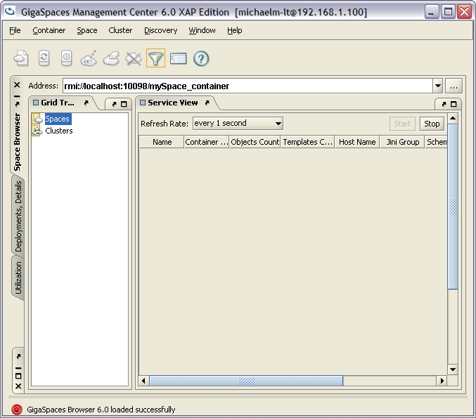
- Click the Deployments, Details tab at the left.
The Deployments, Details tab is displayed:
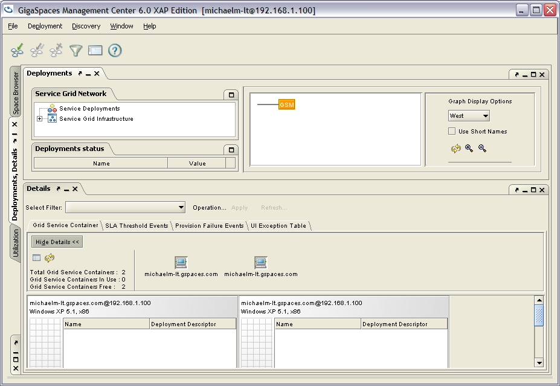
- The two running GSCs are displayed at the bottom of the tab. Both of them are still empty, because no processing units have been deployed.
- To deploy a processing unit, click the deploy button ().
The deployment wizard is displayed:
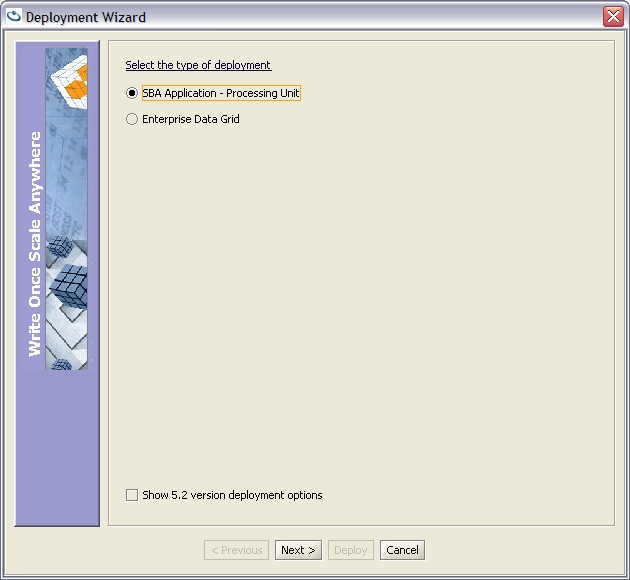
- In the first page of the wizard, click the SBA Application - Processing Unit radio button, and click Next.
The deployment options page is displayed:
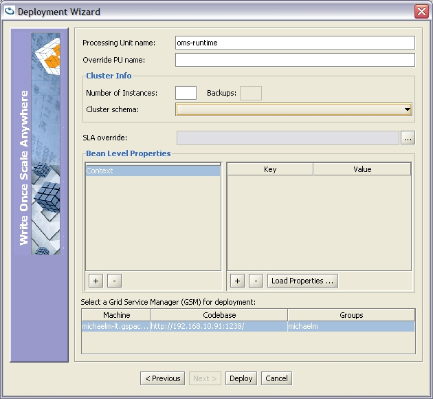
- In the Processing Unit name field, type the name of the Processing Unit. This name should be the same as the name of the processing unit directory, located under the <GigaSpaces Root>\deploy directory.
For example, if you copied the runtime PU folder under the deploy directory with the name oms-runtime, type oms-runtime in the Processing Unit Name field.
You can specify an alternative name for the processing unit, which will be displayed in the Management Center interface, using the Override PU Name field (the Processing Unit Name field must still match the name of your PU directory). For example, if your Processing Unit Name is oms-runtime, your override name might be something like Order Management Runtime Module.
- Click Deploy.
The deployment status page is displayed:
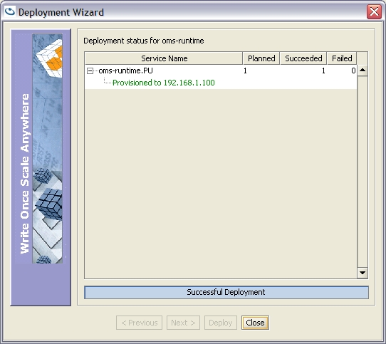
- Wait until the Processing Unit successfully finishes deploying, then click Close.
- Now, have another look at the lower side of the Deployment, Details tab. You should see that one of the GSCs contains the Processing Unit you just deployed.
- Repeat the deployment process twice more for the other Processing Units (remember, you are deploying the runtime, feeder and statistics processing units).
At the bottom of the Deployments, Details tab, you should now see three Processing Units deployed in the two running containers:
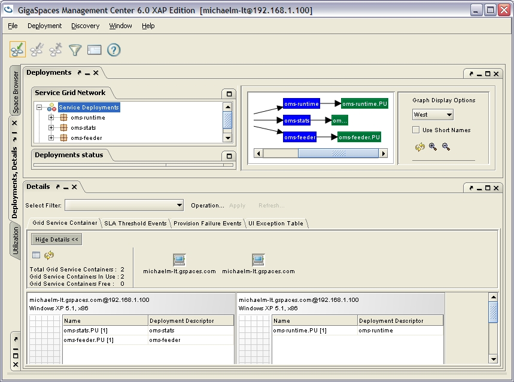
- Remember the os-sla:monitors elements we mentioned? They were defined in the pu.xml of the statistics processing unit. Locate the statistics PU in the containers at the bottom, and double-click its name.
A visual representation of the monitors is displayed:
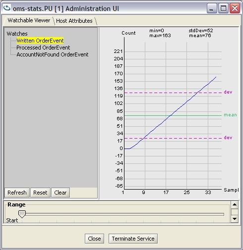
For each processing unit in which you define a monitor, you can easily access that monitor's view by double-clicking the relevant PU's name.
- Click the Space Browser tab on the left. In the Grid Tree on the left, click Spaces.
The Service View on the right updates to show your running spaces:
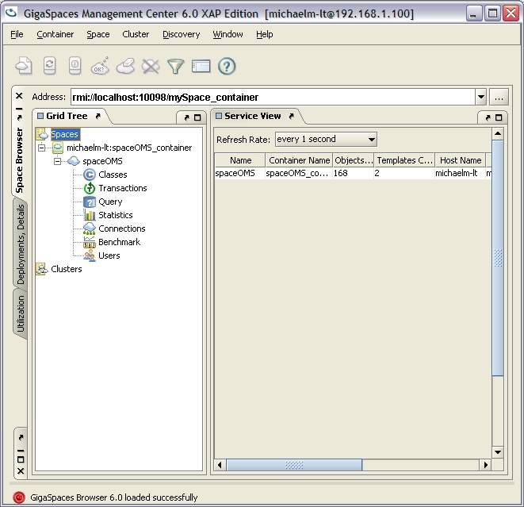
(Currently, you should only have one space running in the runtime PU.) - In the Grid Tree on the left, click the Statistics node.
The Service View on the right updates to show statistics for your running space – how many times different operations were performed on the space:
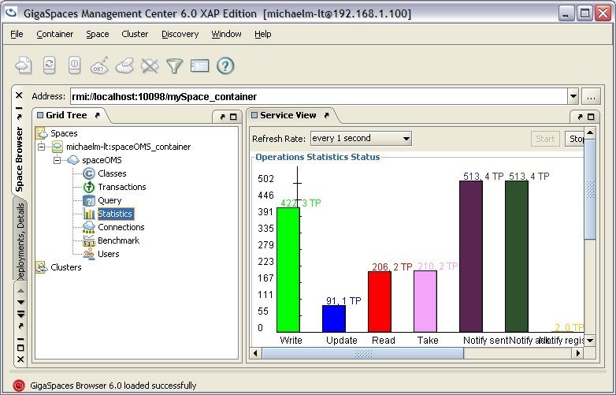
The write and take operations shown in the statistics are the events and accounts written to the space and taken from it. The notify operations are notifications sent to the statistics PU.
Partitioned with Synchronized Backup Deployment

As you could see, developing and deploying our application on the grid wasn't too difficult. Following the 4 steps makes the process clear and easy, and with Open Spaces we achieve a lot of abstraction from the code.
So now the application sends events and processes them while using an embedded space to keep the states of the accounts, as well as to deliver events between services, thus using the space as both the data and the messaging layer, and the entire platform is running a full application without the need to integrate any other product.
But how does it scale? Let's say there are more feeders of order events, those events might be coming from many different directions. Eventually, our runtime processing unit that holds the space will become a bottleneck, it will either run out of memory (as all the objects in the space consume memory), or just fully utilize the CPU. So how do we solve this?
We simply scale out, we add more instances of the runtime processing unit on other SLA containers (GSCs) that run on other machines. There are several possible topologies to achieve this scaling, but the most common one is the partitioned-with-backup topology. This means that there are several spaces running, each with a different partition of the entire data, so sticking with our example, imagine two partitions, each with another half of all the user accounts. This way, when an order event comes in, it is automatically routed to the relevant partition according to the username of that order (remember the @SpaceRouting annotation in the OrderEvent class? That's what it is used for).
In order to achieve better reliability and failover capabilities, each partition also has one backup space, to which it replicates its entire contents in a synchronous manner. In case the primary partition goes down, the backup of that partition automatically takes over, continuing from where the failing primary stopped.
It all must seem quite complicated, but it isn't. Once we've accomplished the previous step of implementation and wiring with Spring, it is just a matter of a small difference in the deployment process. Here's how:
Restart the GSM and two GSC as earlier (to keep things clean just shut down whatever you had running earlier).
Now, within the GigaSpaces Management Center (<GigaSpaces Root>\bin\gs-ui.bat/sh), click on the Deployment, Details tab and on the deploy button. Choose again the first option SBA Application - Processing Unit. On the next screen, put the name of the processing unit you want to scale out (because the runtime processing unit is the only one with an embedded space, it makes sense to partition it) as before. But now, choose the cluster schema partitioned, put 2 in Number of Instances and 1 in the Backups fields. Note that the backups value is per partition, meaning in this case we'll have two partitions, each one with a backup. This is how the screen should look:
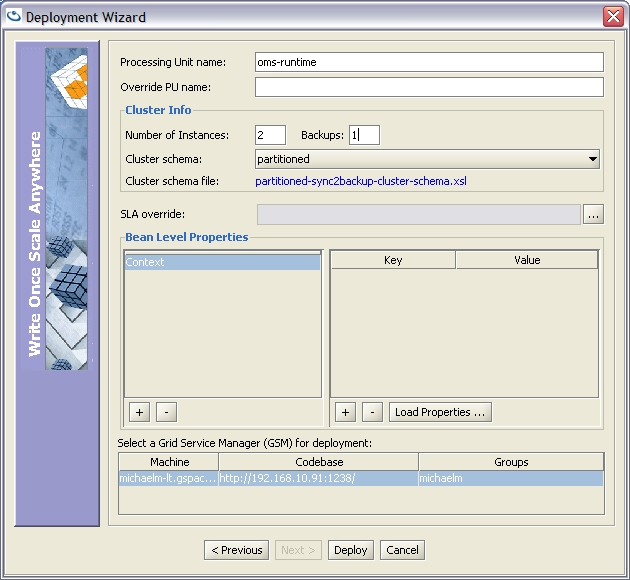
Note that the deployment will take a few seconds longer as it now deploys 4 spaces (two primaries and two backups). Now deploy the feeder and statistics processing units as before.
Back in the Deployments, Details tab you'll now see 4 instances of the runtime processing unit. Note that each primary is on a different container than its backup:
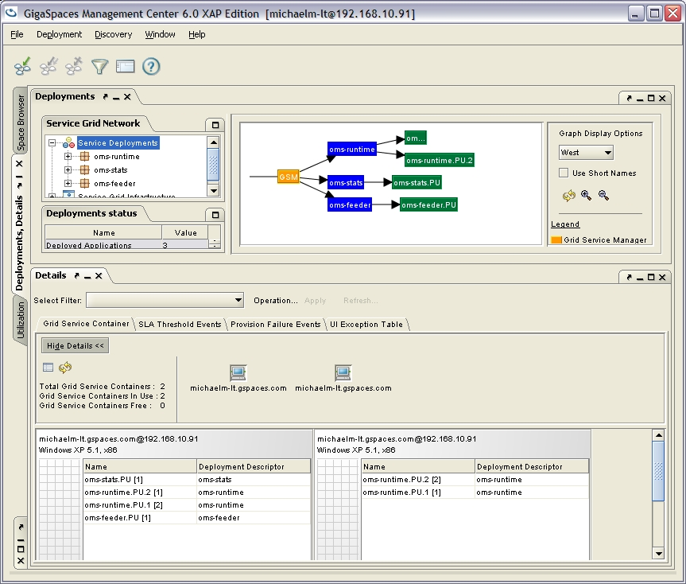
Finally, click on the Space Browser tab to see the four spaces you've just deployed:
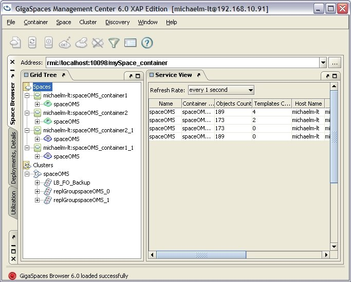
That's it! You've just scaled out your application and can scale it even further by deploying it to as many machines as you want.